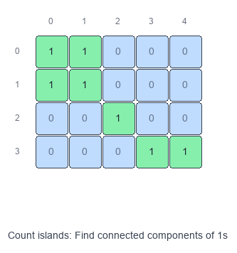
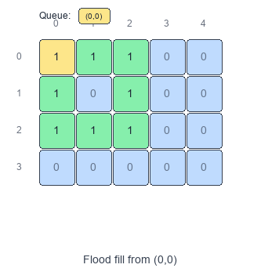

Introduction to Island Pattern (Matrix Traversal)
The Island pattern is "graph connected components" on a 2D grid.
Visual Examples
Count Islands (BFS)

Flood Fill

You’re usually given a matrix (grid) where each cell is either:
- land / water (e.g.,
1/0) - open / blocked
- or some label/color you can transform
Two land cells are connected if they are adjacent (most commonly 4-directionally: up/down/left/right; sometimes 8-directionally).
When to use
- You need to count connected regions (e.g., “number of islands”).
- You need to measure regions (largest island area/perimeter).
- You need to transform a region (flood fill, recolor, capture surrounded regions).
- You need to detect regions with constraints (closed islands, islands touching border).
Core idea
- Treat each cell as a node.
- Edges connect neighboring cells.
- Run DFS/BFS from every unvisited “land” cell to mark the whole component.
Pattern recipe
- Decide the adjacency rule: 4-dir or 8-dir.
- Keep a
visitedstructure (or mark in-place if allowed). - Loop all cells:
- if this cell is “land” and unvisited:
- start DFS/BFS to visit the full component
- update your answer (count += 1, area += size, etc.)
- if this cell is “land” and unvisited:
Complexity
- Time: $O(R \cdot C)$ (each cell processed at most once)
- Space: $O(R \cdot C)$ worst case for
visited/ queue / recursion stack
Implementation tips
- Use a direction array:
- 4-dir:
[(1,0),(-1,0),(0,1),(0,-1)]
- 4-dir:
- If in-place marking is allowed, you can mutate:
grid[r][c] = 0(sink land)- or change to a sentinel like
'#'
- Python recursion depth can be an issue for big grids; BFS (queue) avoids that.
Short example: count islands (DFS, in-place)
def num_islands(grid):
if not grid:
return 0
R, C = len(grid), len(grid[0])
dirs = [(1, 0), (-1, 0), (0, 1), (0, -1)]
def dfs(r, c):
if r < 0 or r >= R or c < 0 or c >= C:
return
if grid[r][c] != "1":
return
grid[r][c] = "0"
for dr, dc in dirs:
dfs(r + dr, c + dc)
ans = 0
for r in range(R):
for c in range(C):
if grid[r][c] == "1":
ans += 1
dfs(r, c)
return ans
Common variants to practice
- Number of Islands
- Max Area of Island / Biggest Island
- Flood Fill
- Number of Closed Islands
- Surrounded Regions (capture regions not touching border)